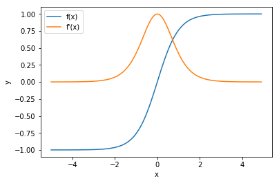

TensorFlow 参数初始化
上世纪八九十年代，有关神经网络的研究由于训练结果不佳而停滞不前。著名的人工智能领域专家 Geoffrey Hinton 总结了一些原因，包括：计算能力低下，缺少训练数据，使用了错误的非线性激活函数以及神经网络权重初始化不优。我之前的文章提出过非线性激活函使用错误会导致的问题。这篇文章将会寻找合适的权重初始化函数。我们将会在权重初始化时使用不同的初始化方法，分别有：正态分布， Xavier 分布和 He 分布。将会用到 TensorFlow 进行实验，并且利用 TensorBoard 可视化分析数据。
1 标准正态分布初始化的问题
权重的随机初始化对于训练神经网络从输入到输出结果的良好映射至关重要。因为在训练期间涉及到的权重的可取空间非常大，训练过程中可能存在许多局部最有解，可能会限制反向传播。有效的权重随机化可以确保训练期间充分探索搜索空间，在反向传播过程中更容易找到全局最优解。但是，权重初始化方法需要仔细选择，否则就会存在很大的风险，即训练进程将会减慢到不切实际的地步。
当使用曾经非常“squashing”的非线性激活函数（例如 sigmod 和 tahn 函数）时，这个问题尤为突出，即使是目前表现最好的“ReLU”算法，依然会出现这个问题。出现此问题的原因是，权重变化之后，很容易将节点的激活函数“推到”曲线的平坦处，使得这个节点被“饱和”而不再继续学习。观察下图中 Tanh 函数及其导数图像：

可以观察到，当 abs(x) > 2 时，tanh 函数的导数基本趋于 0。由于神经网络中更新权重的反向传播算法取决于激活函数的导数，这就意味着，当节点被“推进”饱和区时，学习速率将变慢甚至没有。因此，我们不希望在开始训练的时候，将网络的权重初始化到这些区域中，让网络从一开始就难以训练。sigmod 函数和 tanh 函数基本相同。
一个最简单的权重初始化方法是使用均值为 0 标准差为 1.0 的正态分布。让我们考虑使用简单的统计学知识来想象一下这样初始化会有什么结果。神经网络第一层的输入为：
\begin{equation*} in = X_{1}W_{1} + X_{2}W_{2} + \dots \end{equation*}第一曾的输出，即网络的输入和其与神经元的权重之和，该总和中每个元素的方差可以用自变量定律的乘积来定义：
\begin{equation*} Var(X_{i}W_{i}) = [E(X_i)]^{2}Var(W_{i}) + [E(W_i)]^{2}Var(X_{i}) + Var(X_i)Var(W_i) \end{equation*}如果我们假设输入已经按均值 0 标准差 1.0 进行过适当的缩放（归一化），并且权重也是按均值 0 标准差 1.0 的正态分布初始化，则每个元素的方差为：
\begin{equation*} Var(X_iW_i) = 0 \times 1 + 0 \times 1 + 1 \times 1 = 1 \end{equation*}因此，每个输入与对应神经元权重的内积的方差为 1。那么所有输入变量在输入层神经元的方差是多少呢？假设所有输入变量都是独立的（不是很正确，但可以用来说明问题），那么所有输入变量的方差即每个输入变量的方差之和：
\begin{equation*} Var(in) = \sum_{i=0}^n Var(X_i W_i) = n \times 1 = n \end{equation*}
n 为输入变量的个数。因此，如果我们有784（数据集 MNIST 的输入变量个数）个输入变量，那么输入标准差将会为\(\sqrt{Var(in)} = \sqrt{784} = 28\)。这将会导致大部分的神经元在第一层就被饱和，因为它们的值远大于\(\mid 2 \mid\)。
很明显这种方法并不适合权重初始化，接下来将介绍不同的权重初始化方法。
2 Xavier
Xavier 权重初始化方法相较于上节的标准正态分布初始化方法来说有着巨大的提升。这种方法大大加速了深度学习领域的发展。它考虑到了之前提到的问题，将权重初始化过程中变量的标准差或方差和变量的数量联系起来。因此，这种方法的权重是基于权重的数量来初始化的。它的基本思想是，如果可以保持在正向反馈和反向传播过程中权重的方差恒定，那么神经网络将会有最佳的训练效果。因为，如果在变量传播的过程中，方差增加或者减少，权重都将会不可避免的进入激活函数的正向或者反向饱和区。
那么，根据上面这个想法，我们应该使用哪个方差来作为初始化参数权重的一句呢？由于网络在 tanh 和 sigmoid 函数的线性增加区域才会有效学习，因此我们使用线性函数来近似非线性激活函数：
\begin{equation*} Y = W_{1} X_{1} + W_2 X_2 + \dots \end{equation*}因此，通过线性激活函数，可以使用之前计算出的结果，计算输入变量的方差为：
\begin{equation*} Var(Y) = n_{in} Var(W_i)Var(X_i) \end{equation*}其中 \(n_{in}\) 是每个神经元的输入变量维数。如果要使输入变量（\(Var(X_i)\)）的方差与输出变量（\(Var(Y)\)）的方差相等，需要：
\begin{equation*} Var(W_i) = \frac{1}{n_{in}} \end{equation*}这是使得神经网络权重初始化最好的方差。然而，这实际上只保证了在前向传播的时候方差恒定。能不能同时也保证反向传播的过程中方差恒定呢？有证据表明，要使方差在反向传播中也稳定，需要使：
\begin{equation*} n_{i+1} Var(W_i) = 1 \end{equation*}即：
\begin{equation*} Var(W_i) = \frac{1}{n_{out}} \end{equation*}所以，目前有两种计算所需方差的方法，一种是基于输入变量的维数，另一种是基于输出变量的维数。Xavier 初始化论文 的作者采取了两种方法的优点之后，得出下面的计算所需方法的方法：
\begin{equation*} \begin{split} n_{avg} &= \frac{n_{in} + n_{out}}{2} \\ Var(W_i) &= \frac{1}{n_{avg}} = \frac{2}{n_{in} + n_{out}} \end{split} \end{equation*}对于 tanh 和 sigmoid 激活函数来说，Xavier 方法是最好的初始化方法了。但对于 ReLU 函数而言，这并不是最佳选择。
3 ReLU 激活函数和何式法初始化
先来熟悉一下 ReLU 函数，当输入小于等于 0 时，函数输出为 0；当输入大于 0 时，函数输出为输入本身。也就是说，输出的右半部分是线性的，这是我们之前分析过的；而输出的左半部分为 0。如果假设 ReLU 的神经元输入是以 0 为中心的，那可以粗略估计，一半的方差与 Xavier 初始化结果一致，而另一半为 0。
这基本上相当于将输入节点的数量减半。因此，如果我们使用 Xavier 方法初始化，那输入节点的数量将会减半，即：
\begin{equation*} Var(Y) = \frac{n_{in}}{2} Var(W_i)Var(X_i) \end{equation*}如果要使输入的方差和输出的方差相同，需要满足：
\begin{equation*} Var(W_i) = \frac{2}{n_{in}} \end{equation*}这种方法称为何式初始化，这种方法被发现对 ReLU 激活函数很有效。
4 结束
文章之后就是介绍如何在 TensorFlow 中进行权重初始化。文章写的时候使用的使 TensorFlow 1.8 版本，具体使用可以查看 TensorFlow 文档。